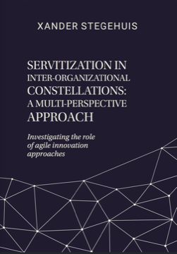

PhD thesis
Servitization in inter-organizational constellations: A multi-perspective approach
University of Twente
April 2024
Publications
Academic research, reports, and reflections on service design, servitization, collaboration, and innovation.

PhD thesis
University of Twente
April 2024
Academic publication
Industrial Marketing Management
February 2023